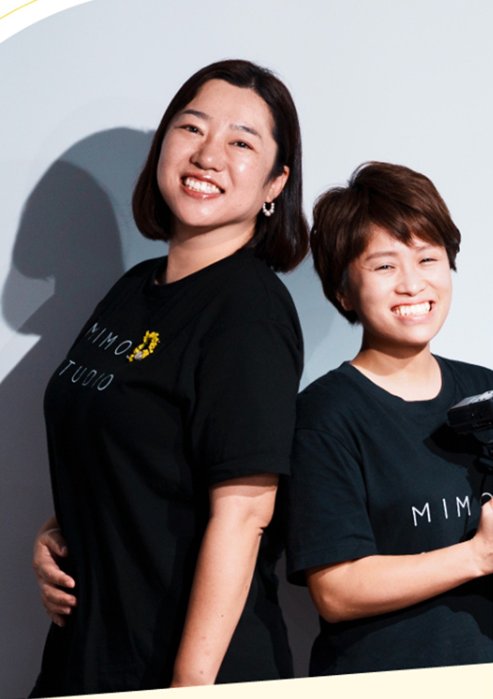

企画の段階から関わってみたい
企画から納品までの流れと、それぞれの役割が分かる
MIMOSA
STUDIOmini
ディレクションコース

誰かが撮った素材を編集してきた経験を、次のステージへ。相手を深く知り、自分の強みと掛け合わせて、あなたにしかできない構成をつくる。題材は経営者のリール。仕事が途切れないプロが何をしているのかも含めて、30日間で「考えて、提案できる人」への一歩を踏み出します。


編集の、その先へ
企画から納品までの流れと、それぞれの役割が分かる
仕事が途切れないプロの考え方と、ビジネス視点を知る
インタビューから企画、構成までを一度通してやってみる
自己分析で強みを言葉にして、それを活かした構成をつくる
AIに任せることと、自分で判断することを分けて考えられる
編集ができる人は、尺の感覚も構成の感覚も、もう持っています。この講座で足すのは「相手を知り、撮る前に考える」ことです。
11.27 FRI 10:00〜12:00
オンライン講義①
仕事が途切れないプロは、ここまでやっている
〜12.2
課題① 自分と相手を知る
12.3 THU 10:00〜12:00
オンライン講義②
自分の強みを、企画に変える
12.13 SUN
東京でインタビュー実践（5時間）
期間中
オンラインでペア練習＋質問対応
〜12.22
課題② あなたにしかできない構成をつくる
12.23 WED 10:00〜12:00
オンライン講義③
発表・講評
12.26 SAT
修了
課題には講師が一人ひとりコメントを返します。
オンライン講義はすべてアーカイブで見直せます。
対面の時間帯と会場は、決まりしだいご案内します。
LIVE 01 / 120分
ASSIGNMENT 01
LIVE 02 / 120分
 対面
対面WORKSHOP / 東京・5時間
オンライン完結プランの方は、オンラインでのペア練習と、講師の実演動画でインタビューを学びます。
ASSIGNMENT 02
LIVE 03 / 120分
インタビューをもとに、あなただけの構成をつくることがゴールです。撮影・編集まで進めたい方は、任意で映像にして発表会で見せてもOKです。
2013年よりテレビ番組制作に従事し、2017年に独立。日本とニューヨークを拠点に活動。日本テレビ系「アナザースカイ」ディレクター。企業のブランドストーリーの演出を多数担当。

mimosa合同会社
共同代表｜
映像カメラマン
ブライダル映像からキャリアを始め、2016年に独立。テレビ番組、ドキュメンタリー、企業映像の現場でカメラマン・プロデューサーとして活動。
主な実績日本テレビ『アナザースカイ』／JNTO『Breathe in Japan』／SSFF & ASIA 2023 優秀賞／ニッポンものづくりフィルムアワード2024 グランプリ
49,800円（税込）
定員20名
98,000円（税込）
定員12名
会場までの交通費は各自のご負担です
申込締切
対面講義付き：11月20日（金）
オンライン完結：11月25日（水）
セミナー参加者の方は、
11/17まで対面席を優先してご案内します
決済はMOSH（クレジットカード）です。
ご質問はLINEで受け付けています。
撮影の経験は問いません。機材も必要ありません。完成度の高い作品より、相手を知り、企画と構成を自分の手で一度つくってみることを大切にしています。
使いません。成果物は企画書と構成までです。映像にしたい方は、お持ちの機材とソフトで任意で取り組めます。
身近なお店や個人事業主の方でも大丈夫です。開講後に講師へ相談できます。
素材を並べて、切って、つなぐ作業ができれば大丈夫です。
アーカイブを配布します。質問・相談は、期間中テキストでいつでもできます。
オンライン完結プランなら、全国から受講できます。
経験があれば、仕事かどうかは問いません。ただし、すでに活動している方向けの講座です（初学者向けではありません）。
撮れるようになりたいなら撮影コース、人の話を引き出して形にしたいならディレクションコースです。迷ったらLINEでご相談ください。